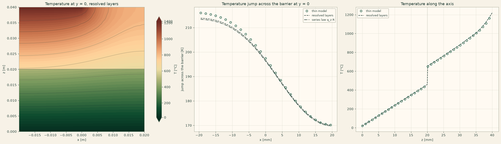
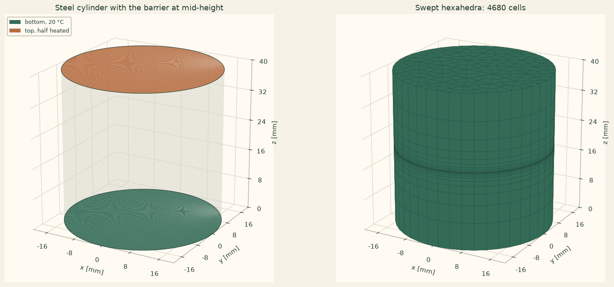

Docs › Examples › Composite thermal barrier: resolved layers and a thin-layer condition
Heat transfer · 3D
Composite thermal barrier: resolved layers and a thin-layer condition
A steel cylinder half heated to 1220 °C on top carries a barrier of two ceramic layers, 50 µm and 75 µm, at mid-height; the barrier is resolved by swept hexahedra once and replaced by a thermal contact once.
Run locally with OneSimulation. The example downloads are free. Running them requires an activated runtime. The current pilot runs on macOS on Apple Silicon with CPython 3.13. Installation and activation · View pilot plans. Scope of the reference checks.

What it computes
OneSimulation reads the cylinder and its two steel parts from STEP files. The resolved model sweeps hexahedra from the bottom with two cells through each ceramic layer and gives each layer its conductivity; the thin model splits the cylinder at the barrier and joins the parts with a thermal contact of the series conductance of both layers. Both are solved as 3D steady heat conduction with quadratic elements. The script that builds the STEP files comes with the notebook.
What it checks
The thin model gives the heat flow of the resolved layers within 0.8 % (1210 against 1220 W) and the temperature jump across the barrier within 1 % at five places, from 213.0 K on the heated side to 172.2 K on the insulated side; in the resolved model the jump equals the local normal flux times the series resistance 2e-4 m² K/W within 0.25 %.
Geometry
The notebook starts at the import of the CAD files composite_thermal_barrier_thin_layer.step, composite_thermal_barrier_thin_layer_parts.step: STEP (AP242), readable by any CAD program, with the names of the faces that the boundary conditions use. Put them next to the notebook.

The geometry script
The script composite_thermal_barrier_thin_layer_geometry.py builds the geometry with the CAD objects of OneSimulation and writes the files. Change a dimension there, run it, and run the notebook again.
"""Geometry of the OneSimulation example "Composite thermal barrier: resolved layers and a thin-layer condition".
Builds a steel cylinder of 2 cm radius and 4 cm height with the CAD objects of OneSimulation. A barrier
of two ceramic layers, 50 µm and 75 µm, sits at mid-height (z = 20 mm to 20.125 mm).
composite_thermal_barrier_thin_layer.step holds the whole cylinder, in which the layers are resolved by
the mesh; composite_thermal_barrier_thin_layer_parts.step holds the lower and the upper steel part,
which meet in the middle plane of the barrier. Groups: bottom (z = 0), top (z = 4 cm), mantle.
"""
from onesim.cad.d3 import Assembly, Cylinder
radius, height, barrier = 0.02, 0.04, 0.02 + 62.5e-6
whole = Cylinder(radius=radius, length=height)
faces = whole.boundaries
whole.grouped(bottom=faces.bottom, top=faces.top, mantle=faces.side).save(
"composite_thermal_barrier_thin_layer.step"
)
lower = Cylinder(radius=radius, length=barrier)
upper = Cylinder(radius=radius, length=height - barrier, origin=(0.0, 0.0, barrier))
lower = lower.grouped(bottom=lower.boundaries.bottom, mantle=lower.boundaries.side)
upper = upper.grouped(top=upper.boundaries.top, mantle=upper.boundaries.side)
Assembly(parts=(lower.named("lower"), upper.named("upper"))).save(
"composite_thermal_barrier_thin_layer_parts.step"
)The notebook
The complete notebook, cell by cell. Run it to produce the figures and the comparison printout.
Thermal barrier coatings and insulating interlayers are a few tens of micrometres thick on parts of centimetres. A 3D model that resolves them needs cells as thin as the layers. If the layers conduct far less than their surroundings, the heat crosses them perpendicularly and the stack acts as one resistance per area,
with a jump of the temperature across it. In OneSimulation this is a ThermalContact with the conductance \(1/R\) on the faces between the two steel parts.
The cylinder of steel (\(k=44.5\) W/(m K)) has a radius of 2 cm and a height of 4 cm. At \(z=20\) mm sits a layer of ceramic 1 (\(d_1=50\) µm, \(k_1=1\) W/(m K)) and above it one of ceramic 2 (\(d_2=75\) µm, \(k_2=0.5\) W/(m K)), so \(R=2\cdot10^{-4}\) m² K/W, as much as 8.9 mm of steel.
| face | condition | |---|---| | bottom, \(z=0\) | \(T=20\) °C | | top, half \(x<0\) | \(T=1220\) °C, held through a surface conductance of \(10^{9}\) W/(m² K) | | top, half \(x>0\), and mantle | insulated |
The resolved model meshes the whole cylinder with hexahedra swept from the bottom, with two cells through each ceramic layer; regionwise gives the cells of each layer its conductivity. The thin model splits the cylinder in the middle plane of the barrier into two steel parts and puts the thermal contact between them.
The cylinder and its two parts come from the CAD files composite_thermal_barrier_thin_layer.step and composite_thermal_barrier_thin_layer_parts.step; the script composite_thermal_barrier_thin_layer_geometry.py builds them with the CAD objects of OneSimulation. Both models are three-dimensional.
Reference. At every place the jump across the resolved barrier must equal the local normal heat flux times \(R\) (series law of the two layers), and the thin model must reproduce the temperatures and the heat flow of the resolved model. Because the steel spreads the heat sideways, the flux through the barrier is far from uniform; no closed form exists for the cylinder.
import numpy as np
from onesim.cad.d2 import Plane
from onesim.cad.exchange import load
from onesim.materials import IsotropicSolid, regionwise
from onesim.meshing import (
Geometric,
Piecewise,
SweepMesher,
TetrahedralMesher,
Uniform,
interface,
)
from onesim.numerics import Numerics
from onesim.numerics.fem import FiniteElement, Lagrange
from onesim.numerics.linear import SparseDirect
from onesim.numerics.nonlinear import Newton
from onesim.physics.heat_transfer import (
FixedTemperature,
HeatConduction,
HeatFlux,
NonlinearHeatFlux,
ThermalContact,
)
from onesim.simulation import Problem, Simulation
from onesim.visualization import plots, theme
theme.set()Geometry and mesh
The resolved cylinder is swept from its bottom face: 10 graded cell layers up to the barrier, two in each ceramic layer, 10 above. The two parts of the thin model get tetrahedra of 2.2 mm.
whole, parts = load("composite_thermal_barrier_thin_layer.step"), load(
"composite_thermal_barrier_thin_layer_parts.step"
)
height, start, d1, d2 = 0.04, 0.02, 50e-6, 75e-6
layers = Piecewise(
(
(start / height, Geometric(10, first=1.5e-4, toward="end")),
(d1 / height, Uniform(2)),
(d2 / height, Uniform(2)),
(
(height - start - d1 - d2) / height,
Geometric(10, first=1.5e-4, toward="start"),
),
)
)
meshes = {
"resolved": SweepMesher(
source=whole.boundaries.bottom, target_size=0.003, layers=layers
).generate(whole),
"thin": TetrahedralMesher(target_size=0.0022).generate(parts),
}
fig = plots.figure(1, 2, size=(14, 6))
plots.geometry(
whole,
selection={
"bottom, 20 °C": whole.boundaries.bottom,
"top, half heated": whole.boundaries.top,
},
labels=False,
camera=plots.Camera(elevation=20, azimuth=-60),
length_unit="mm",
title="Steel cylinder with the barrier at mid-height",
ax=fig[0],
)
plots.mesh(
meshes["resolved"],
groups=("all",),
legend=False,
camera=plots.Camera(elevation=20, azimuth=-60),
length_unit="mm",
title=f"Swept hexahedra: {meshes['resolved'].cell_count} cells",
ax=fig[1],
)
plots.show()Models
In the resolved model regionwise decides by the height of the point: every cell of the swept mesh lies entirely in steel or in one ceramic layer. The thin model takes the steel throughout and ThermalContact on the faces between the two parts.
steel, k1, k2, cold, hot = 44.5, 1.0, 0.5, 293.15, 1493.15
resistance = d1 / k1 + d2 / k2
layer = lambda low, high: (lambda points: (points[:, 2] > low) & (points[:, 2] < high))
conductivity = {
"resolved": regionwise(
((layer(start, start + d1), k1), (layer(start + d1, start + d1 + d2), k2)),
default=steel,
unit="W/m/K",
),
"thin": steel,
}
heater = lambda x: np.where(x < 0.0, 1e9, 0.0)
numerics = Numerics(
spatial=FiniteElement(element=Lagrange(order=2)),
linear_solver=SparseDirect(),
nonlinear_solver=Newton(relative_tolerance=1e-10, maximum_iterations=10),
)
models, fields = {}, {}
for kind, geometry in (("resolved", whole), ("thin", parts)):
faces = geometry.boundaries
bottom, top, mantle = (
(faces.bottom, faces.top, faces.mantle)
if kind == "resolved"
else (
faces["lower.bottom"],
faces["upper.top"],
faces["lower.mantle"] | faces["upper.mantle"],
)
)
material = IsotropicSolid(
density=7850.0,
specific_heat_capacity=475.0,
thermal_conductivity=conductivity[kind],
youngs_modulus=2e11,
poisson_ratio=0.3,
thermal_expansion_coefficient=0.0,
)
model = HeatConduction(domain=geometry.domain(), material=material, heating=0.0)
contact = (
(
ThermalContact(
boundary=interface(meshes[kind], "lower_upper"),
physics=model,
conductance=1 / resistance,
),
)
if kind == "thin"
else ()
)
problem = Problem(
name=f"Composite thermal barrier, {kind}",
geometry=geometry,
physics=(model,),
boundary_conditions=(
FixedTemperature(boundary=bottom, physics=model, value=cold),
NonlinearHeatFlux(
boundary=top,
physics=model,
flux=lambda temperature, x: heater(x) * (temperature - hot),
derivative=lambda temperature, x: heater(x) + 0.0 * temperature,
),
HeatFlux(boundary=mantle, physics=model, value=0.0),
)
+ contact,
)
models[kind] = (model, bottom)
fields[kind] = Simulation(
problem=problem,
mesh=meshes[kind],
numerics=Numerics(
spatial=numerics.spatial,
linear_solver=SparseDirect(),
nonlinear_solver=numerics.nonlinear_solver,
initial_guess={model.temperature: cold},
),
).solve_stationary()Results
The heat flow through the bottom, the temperatures just below and just above the barrier at five places across the cylinder, and the jump against flux times \(R\).
temperature = {kind: fields[kind].field(models[kind][0].temperature) for kind in fields}
flux = {kind: fields[kind].field(models[kind][0].heat_flux) for kind in fields}
flow = {kind: abs(temperature[kind].reaction(models[kind][1])) for kind in fields}
print(
f"series resistance of the barrier R = {resistance:.2e} m² K/W; heat flow resolved {flow['resolved']:.3f} W, thin {flow['thin']:.3f} W "
f"({100 * (flow['thin'] / flow['resolved'] - 1):+.2f} %)"
)
x = np.array([-0.015, -0.0075, 0.0, 0.0075, 0.015])
below = np.column_stack((x, np.zeros(5), np.full(5, start - 1e-5)))
above = np.column_stack((x, np.zeros(5), np.full(5, start + d1 + d2 + 1e-5)))
print(
"x [mm] below [°C] resolved thin above [°C] resolved thin jump [K] resolved thin q_z R [K]"
)
for i, xi in enumerate(x):
rb, ra = (
temperature["resolved"].evaluate(below[i : i + 1])[0],
temperature["resolved"].evaluate(above[i : i + 1])[0],
)
tb, ta = (
temperature["thin"].evaluate(below[i : i + 1])[0],
temperature["thin"].evaluate(above[i : i + 1])[0],
)
qz = -flux["resolved"].evaluate(below[i : i + 1])[0, 2]
print(
f"{1e3 * xi:6.1f} {rb - 273.15:20.2f} {tb - 273.15:7.2f} {ra - 273.15:20.2f} {ta - 273.15:7.2f} {ra - rb:18.3f} {ta - tb:7.3f} {qz * resistance:11.3f}"
)
print(
f"mean barrier temperature on the axis plane: resolved {np.mean(temperature['resolved'].evaluate(np.vstack((below, above)))) - 273.15:.1f} °C"
)The thin contact gives the temperatures on both sides of the barrier and the heat flow of the resolved layers; the jump follows the local flux times the series resistance everywhere, from the heated side, where the flux is concentrated, to the insulated side.
Figure
The temperature of the resolved model on the plane \(y=0\), the jump across the barrier along that plane in both models with the series law, and the temperature along the axis \(x=y=0\).
fig = plots.figure(1, 3, size=(21, 6))
plots.section(
temperature["resolved"],
plane=Plane(origin=(0, 0, 0), normal=(0, 1, 0)),
component=lambda T, position: T - 273.15,
limits=(20, 1220),
contours=13,
subdivisions=2,
label="T [°C]",
xlabel="x [m]",
ylabel="z [m]",
title="Temperature at y = 0, resolved layers",
ax=fig[0],
)
xs = np.linspace(-0.0195, 0.0195, 79)
side = lambda height: np.column_stack((xs, np.zeros_like(xs), np.full_like(xs, height)))
plots.line(
points={
"thin model": (
1e3 * xs[::3],
(
temperature["thin"].evaluate(side(start + d1 + d2 + 1e-5))
- temperature["thin"].evaluate(side(start - 1e-5))
)[::3],
)
},
reference={
"resolved layers": (
1e3 * xs,
temperature["resolved"].evaluate(side(start + d1 + d2 + 1e-5))
- temperature["resolved"].evaluate(side(start - 1e-5)),
),
"series law q_z R": (
1e3 * xs,
-flux["resolved"].evaluate(side(start - 1e-5))[:, 2] * resistance,
),
},
xlabel="x [mm]",
ylabel="jump across the barrier [K]",
title="Temperature jump across the barrier at y = 0",
ax=fig[1],
)
z = np.concatenate(
(np.linspace(0.0, start, 200), np.linspace(start + d1 + d2, height, 200))
)
axis = np.column_stack((np.zeros_like(z), np.zeros_like(z), z))
plots.line(
points={
"thin model": (1e3 * z[::10], temperature["thin"].evaluate(axis[::10]) - 273.15)
},
reference={
"resolved layers": (1e3 * z, temperature["resolved"].evaluate(axis) - 273.15)
},
vlines=[1e3 * start],
xlabel="z [mm]",
ylabel="T [°C]",
title="Temperature along the axis",
legend="upper left",
ax=fig[2],
)
plots.show()Going further
Give the layers a conductivity close to that of the steel to see the tangential conduction in the layers matter, or swap the order of the two ceramics: the series resistance and with it the jump stay the same.